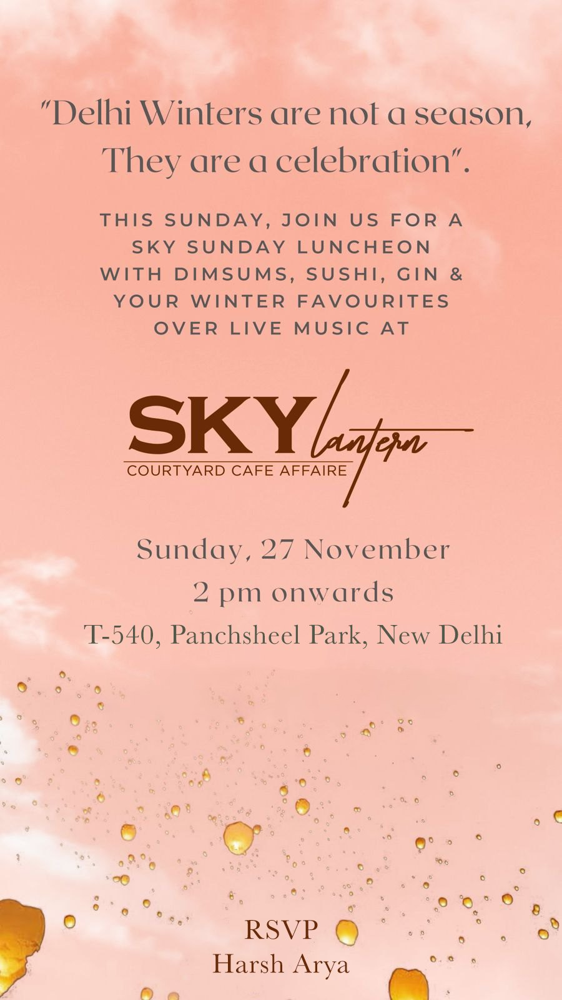

22 creators across 70 story frames at Sky Lantern — Panchsheel Park courtyard café. Combined reach 3.52M (13 verified handles). Anchored on Saanya Khatter (533K), Deeksha (423K), Prerna Massey (419K verified), Bhavya Monga Arya (389K verified). Repositioned a winter Sunday luncheon as a feed-event the city kept living off.
Sky Lantern is a courtyard café in Panchsheel Park — the kind of room the city likes but doesn't have to seek out. The brief to 98 was to take a Sunday luncheon and turn it into a feed-event: not 'come for lunch', but 'this is where Delhi's content audience is on a Sunday afternoon in winter'.
98 ran 22 creators across 70 story frames around a single editorial anchor — the 'Sky Sunday Luncheon' invite framed as 'Delhi Winters are not a season. They are a celebration.' Saanya Khatter (533K), Deeksha (423K), Prerna Massey (419K verified), Bhavya Monga Arya (389K verified), and Soundarya Thakur (322K verified) anchored the marquee with 13 verified voices in total — establishing the courtyard as a credible Sunday destination across multiple audience classes.
Sky Lantern · Courtyard Cafe Affaire.
22-creator UGC seeding · reels + stories · 70 captured story frames.
98 Entertainment — 22-creator winter push for Sky Lantern's courtyard, run as a season not an event.
Standardised tag stack (@skylantern.in + @98.entertainment) across every visit.
Courtyard cafés in Delhi face a discovery problem: they don't have walk-by traffic, and the room reads better at certain times than others. Sky Lantern needed to convert a one-day Sunday service into ambient cultural recognition. That requires a creator stack that posts in tandem, around a single calendar anchor, with the same editorial mood.
A Sunday luncheon becomes a season
when the creator stack treats it as one.
The Sky Sunday Luncheon gave the 22-creator stack a reason to post on the same weekend — not just an open visit window but a shared, calendar-defined reference point.
'Delhi Winters are not a season. They are a celebration' carried across invite + creator captions. Branded recall on IG search + saved content.
13 verified handles inside one campaign window — institutional weight without paid-campaign markers.
Sky Lantern · Courtyard Cafe Affaire ran on a roster of 22 creators — 5 marquee, 17 supporting. Verticals covered: Public figure · fashion · model · digital creator · lifestyle.
Soundtrack lock: Winter cinematic · live-music ambient
Saanya's 532K public-figure reach opened the season — winter Sundays at Sky Lantern announced from a feed the city already follows.
Luncheon coverage in her social register — the courtyard full, the long table, the tags — the season's opening statement.
Her post is why the campaign reads 'winter as celebration': the season had a face before it had a menu.
Deeksha's 423K lifestyle audience plans weekends — precisely the intent a Sunday-luncheon brand needs to intercept.
Stories through a Sunday — arrival, table, the courtyard light — tagged @skylanterndelhi.
Weekend-plan feeds like hers are where 'we should go' turns into a booking; the roster leaned on that.
Prerna's editorial 418K matched the courtyard's look — string lights, marble, the lantern marquee. The venue is a set; she shot it as one.
The watermelon cooler raised against the SKY lantern wall — pink blazer, winter sun — plus the styled table frames around it.
Her marquee-wall frame became the season's signature image, re-run across the venue's own channels.
Bhavya's 389K blogger graph gave the luncheon its considered-review layer — menus judged, not just photographed.
The spread on the record: corn chaat, kebab boards on marble, verdicts in the captions, tags in the stack.
Her write-up register is what let the season's warmth carry substance — pretty courtyard, and the food holds.
Soundarya's 321K discovery feed closed the loop — the audience that searches 'sky lantern delhi' after seeing it twice.
A what-would-you-choose poll — Chatpata Angari Murg Tikka vs Creamy Malai Tikka — run over top-down frames of the tandoori platters, captioned 'such tasty indian blend food'.
Her poll turned the menu into participation; the venue's own grid borrowed the format for its winter posts.
Seventeen more creators posted behind the five above — seventy story frames across the winter windows, thirteen verified handles among them.
| Handle | Followers | Name · Role | |
|---|---|---|---|
| @shabostoc | 230K | Shabnam Fathima · Digital creator | |
| @mehak_sembhy | 228K | Mehak Sembhy · Lifestyle · Fitness · Travel | |
| @teeyachawla | 129K | ✓ V | Teeya Chawla · Lifestyle |
| @sakshinanda | 91K | Sakshi Nanda · Lifestyle | |
| @irasikka | 86K | ✓ V | Ira Sikka · Personal blog |
| @prakshigoyall | 79K | Prakshi Goyal · Lifestyle | |
| @kitchen_tikka | 76K | Riya · Digital creator | |
| @nabby_gyads | 74K | ✓ V | Nabby Gyadi · Fashion model |
| @natanshakothari | 74K | ✓ V | Natansha Kothari · Lifestyle · Fashion · Beauty |
| @aavyaduggall | 65K | ✓ V | Aavya Duggal · Lifestyle |
| @urnishaswargari | 57K | ✓ V | Urnisha Swargari · Lifestyle |
| @samikshamalikk | 56K | ✓ V | Samiksha Malik Jain · Lifestyle |
| @divijasikka | 51K | Divija · Lifestyle | |
| @thenavyajoshii | 45K | Navya Joshi · Digital creator | |
| @ambikaaroraaaaa | 39K | ✓ V | Ambika Arora · Public figure |
| @bhavna24choudhary | 31K | ✓ V | Bhavna Choudhary · Lifestyle · Travel |
| @kavyaakapur | 19K | Kavya · Digital creator |
Beyond the creator activation, 98 designed and produced the event collateral around the Sky Lantern · Courtyard Cafe Affaire campaign. The invite below was deployed across creator dropbox and direct-DM seeding to the marquee roster.

What 98 produced. Concept design ("Delhi Winters are not a season. They are a celebration.") + invite collateral + RSVP coordination through the marquee creator roster. Direct-DM invitations seeded to a curated 22-creator list.
A dim sum + sushi + gin Sunday luncheon framed as a winter celebration — turning a one-day service into a feed-event the room kept living off through January.
98 ran the Sky Lantern · Courtyard Cafe Affaire launch as a four-stage operation: brief and concept, creator match, visit choreography, and asset handover.
| Stage | Owner | Detail |
|---|---|---|
| Strategy | 98 strategy | 22-creator design · single-event calendar anchor · multi-class verified stack. |
| Talent | 98 talent management | 13 verified placements · cross-class roster · ~4 working weeks. |
| Production | 98 production + Sky Lantern | Sunday luncheon choreography · service flow for multi-creator visits. |
| Asset Handover | 98 → Sky Lantern | Reels + 70 story masters + invite collateral + caption pack. |
The Sky Lantern · Courtyard Cafe Affaire campaign produced four distinct asset classes — built to live beyond the launch window.
Sky Lantern is 98's case for calendar-anchored creator activations. A single editorial moment — the 'Sky Sunday Luncheon · Winter Edition' — gave 22 creators a shared reference point. The result: a one-day service became a multi-week feed-event the room kept living off through the winter.
A Sunday luncheon becomes a season when the roster treats it as one. Twenty-two voices across five weekends made a Panchsheel courtyard the city's standing winter plan.
98 Entertainment · ninety-eight.in · @98.entertainment